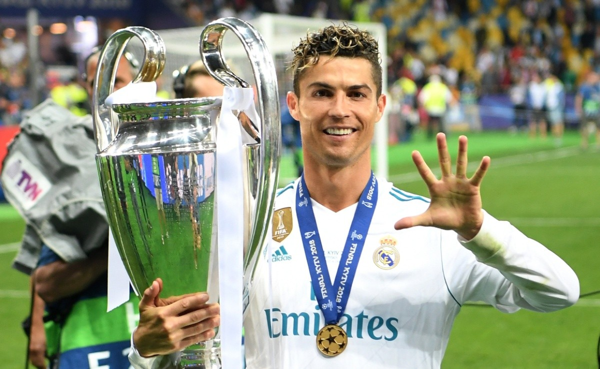
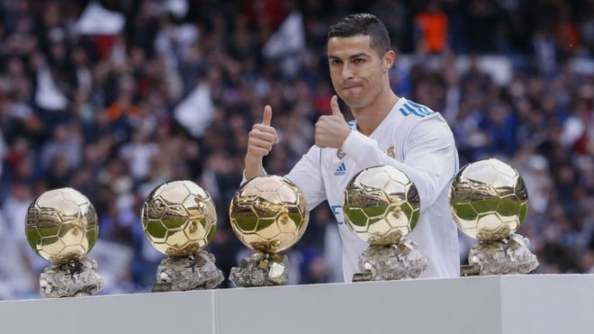
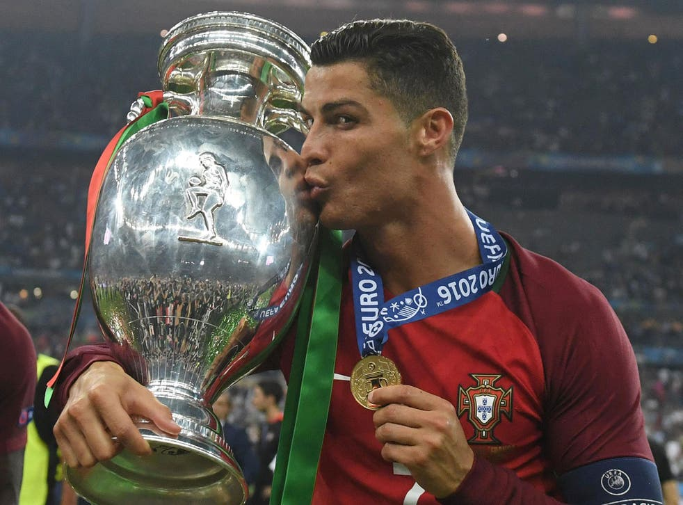

Cristiano Ronaldo is a Portuguese forward who started his career in Lisbon with Sporting Clube de Portugal in 2002. In his first season, he impressed many clubs across and earned a move to Manchester United a year later. After playing 6 seasons at Manchester United, Ronaldo joined Real Madrid in a move that, at the time, broke the world record transfer fee. 8 years later, Ronaldo left Real Madrid and joined Italian giants Juventus for 3 seasons before moving back to Manchester United in the summer of 2021. Throughout this career, Ronaldo has played 915 matches, in which he has scored 687 goals and given 300 assists at club level. For the Portuguese national team, he has played 184 matches, scored 115 goals and given 41 assists.
Ronaldo has won many trophies for the clubs he has played for. He has won 30 trophies for the 4 clubs he has played for, 2 international trophies with the national team of Portugal, and many individual awards. Among the trophies he has won are 5 Champions League titles (1 at Manchester United, the other 4 at Real Madrid), 4 FIFA Club World Cup titles (1 at Manchester United and 3 at Real Madrid), and 3 Premier League titles at Manchester United.
 List of Ronaldo's major trophies and awards:
- 5 UEFA Champions League titles
- 4 FIFA Club World Cup titles
- 3 Premier League titles
- 2 Football League Cup titles
- 2 La Liga titles
- 2 Copa del Rey titles
- 2 Supercopa de España titles
- 2 UEFA Super Cup titles
- 2 Serie A titles
- 2 Supercoppa Italiana titles
- 1 Supertaça Cândido de Oliveira title
- 1 FA Cup title
- 1 FA Community Shield title
- 1 Coppa Italia title
- 1 UEFA European Championship title
- 1 UEFA Nations League title
- 5 Ballon D'ors
- 4 Golden Boots
- 2 The Best FIFA Men's Player awards
- 2 Premier League Player of the Season awards
- 2 Serie A Footballer of the Year awards
List of notable records held by Ronaldo
- Most goals scored in soccer history: 802
- Most goals scored for a national team: 115 goals for Portugal
- Most goals scored in the UEFA Champions League: 140
- All-time top goalscorer for Real Madrid: 450
- Most goals scored at the UEFA European Championship: 14
- Most hat-tricks for a national team: 10 for Portugal